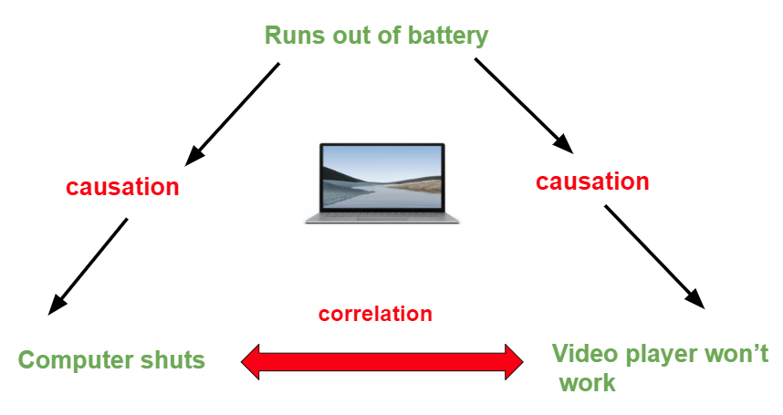

영국의 철학자 데이비드 흄이 그의 저서 “인간 지성의 조사”에서 인간 지식의 인과관계를 인식하는데 있어 필요한 세 가지 조건을 제시하였습니다. 조건은 아래와 같습니다 :
- 인접성(contiguity) : 인과 관계에 있는 두 사건이 공간적으로나 시간적으로 가까워야 함을 의미합니다. 예를 들어, 어떤 원인이 결과를 초래하려면, 그 원인과 결과는 공간적으로 인접해 있어야 하며, 시간적으로도 가까운 시점에서 발생해야 합니다. 이 개념은 인과 관계를 분석할 때 중요한 역할을 합니다.
- 시간적 선행(temporal precedence) : 인과 관계에 있는 두 사건이 시간 순서에 따라 발생해야 함을 의미합니다. 원인이 항상 결과에 선행해야 합니다. 즉, 원인이 먼저 발생하고 그 다음에 결과가 발생합니다.
- 지속적 연관(constant conjunction) : 지속적 연관은 인과 관계에 있는 두 사건이 일정하게 발생한다는 것을 의미합니다. 이 개념은 두 사건 사이에 인과 관계가 있다고 추론할 때 중요한 역할을 합니다. 예를 들어, 어떤 원인이 항상 특정한 결과와 함께 발생하면, 그 두 사건 사이에 인과 관계가 있다고 추론할 수 있습니다.
마찬가지로 영국의 철학자인 존 스튜어트 밀의 경우, 인과관계를 탐색하는 데에 있어 5가지 방법을 제시하였습니다. 이는 ’Mill’s Method’라고도 불립니다. 다섯 가지 방법은 하기와 같습니다:
- 동시 발생의 방법 (Method of Agreement): 서로 다른 상황에서 결과가 발생할 때 공통적으로 존재하는 요소를 인과 요인으로 간주합니다.
- 차이의 방법 (Method of Difference): 결과가 발생하는 상황과 발생하지 않는 상황에서의 유일한 차이점을 인과 요인으로 간주합니다.
- 공변의 방법 (Method of Concomitant Variation): 인과 요인과 결과가 함께 변하는 정도를 관찰하여 인과 관계를 찾습니다.
- 잔여의 방법 (Method of Residues): 이미 알려진 인과 요인을 제외한 후, 남아있는 결과와 요인 사이의 인과 관계를 찾습니다.
- 역설적 합리화의 방법 (Method of Contra-positive Reasoning): 인과 요인이 없을 때 결과도 발생하지 않는 것을 관찰하여 인과 관계를 확인합니다.